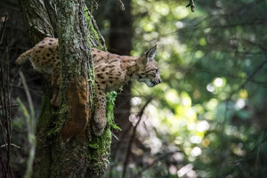

Впервые подробный анализ понятия «тайга» (слово монгольского происхождения) дал в 1898 году российский ботаник П. Н. Крылов, который определил тайгу как темнохвойный бореальный сомкнутый лес и противопоставил её сосновому бору, лиственничным, сосновым и мелколиственным лесам.
Тайга — крупнейший сухопутный биом в мире, её площадь составляет 15 млн км². Тайга — самая большая по площади ландшафтная зона России. Её ширина в Европейской части достигает 800 км, а в Западной и Восточной Сибири — 2150 км. Таёжные зоны России стали формироваться ещё до наступления ледников.
Тайга делится (в направлении от юга на север) на три подзоны по характеру растительности: южную, среднюю и северную. В северной тайге доминируют низкорослые и разреженные ели и сосны, в средней тайге растут в основном ельники-черничники. Растительность южной тайги значительно более разнообразна.
Тайге свойственно отсутствие или слабое развитие подлеска (так как в лесу мало света), а также однообразие травяно-кустарникового яруса и мохового покрова («зелёные мхи»). Виды кустарников (можжевельник, жимолость, смородина и др.), кустарничков (черника, брусника и др.) и трав (кислица, грушанка).

На севере Европы (Финляндия, Швеция, Норвегия, Россия) преобладают еловые леса. Для тайги Урала характерны светлохвойные леса из сосны обыкновенной. В Сибири и на Дальнем Востоке господствует редкостойная лиственничная тайга с подлеском из кедрового стланика, рододендрона даурского и других растений.

Животный мир тайги богаче и разнообразнее, чем тундры, но беднее фауны широколиственных и смешанных лесов. Широко распространены рысь, росомаха, волк, лиса, бурый медведь, выдра, соболь, ласка, горностай и др.; многочисленны зайцы, бурозубки, грызуны: бобры, бурундуки, мыши, полёвки, белки и летяги. Из копытных встречаются северный и благородный олень, лось, косуля, кабарга (в Сибири).
В тайге гнездится более 300 видов птиц. Обычны глухарь, обыкновенный рябчик, кедровка, клесты, несколько видов дятлов и сов. Такие таёжные виды птиц, как сибирский дрозд, белошейная зонотрихия, зелёный лесной певун, на зиму мигрируют на юг.
Для распространения хладнокровных животных морозные зимы в тайге составляют существенное препятствие. Пресмыкающиеся практически отсутствуют (в Евразии встречаются три вида — обыкновенная гадюка, подвязочная змея обычная и живородящая ящерица), из земноводных распространены сибирский углозуб, саламандры, лесная лягушка, леопардовая лягушка, американская жаба.
Тайгу Евразии, главным образом массивы сибирской тайги, называют зелёными «лёгкими» планеты. В тайге сосредоточены запасы промышленной древесины, открыты и разрабатываются крупные месторождения полезных ископаемых (уголь, нефть, газ и др.).
Традиционные занятия населения — охота на пушного зверя, сбор лекарственного сырья, дикорастущих плодов, орехов, ягод и грибов, рыболовство, лесопромысловое хозяйство (добыча и обработка древесины), скотоводство.